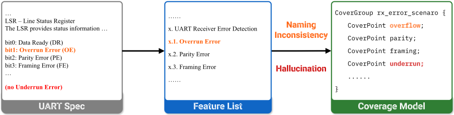
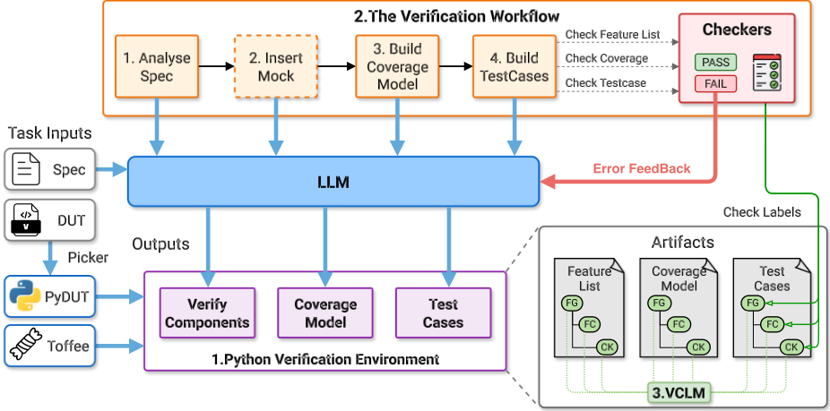
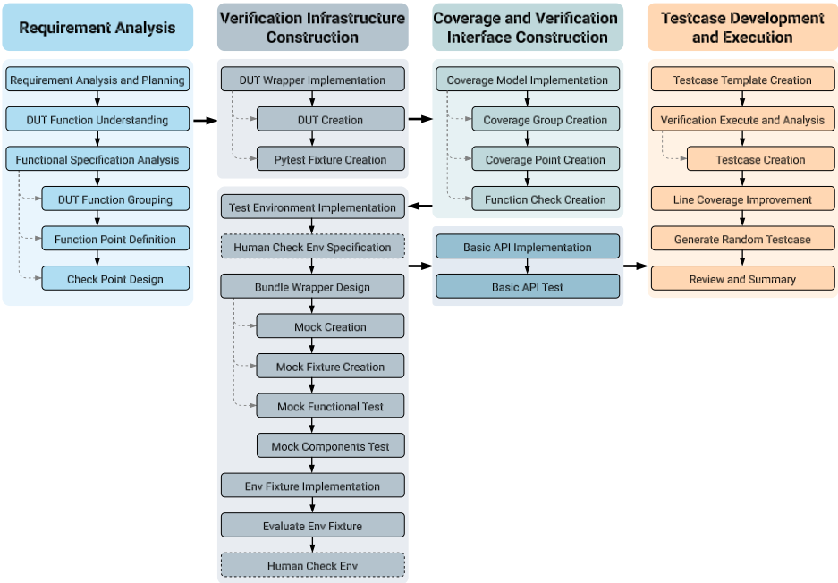
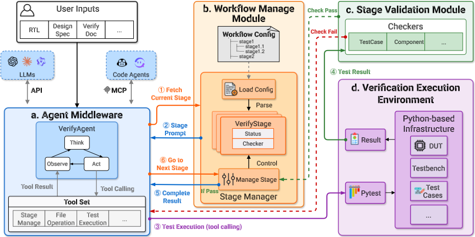
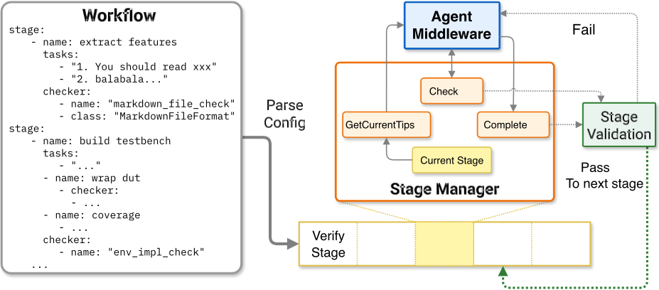
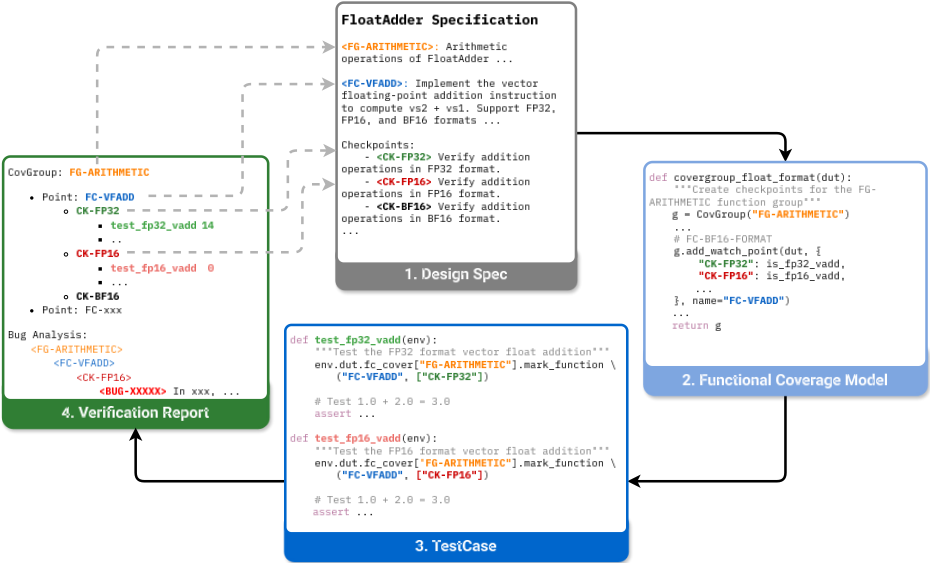
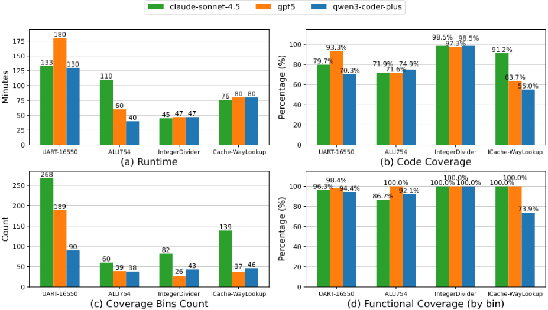
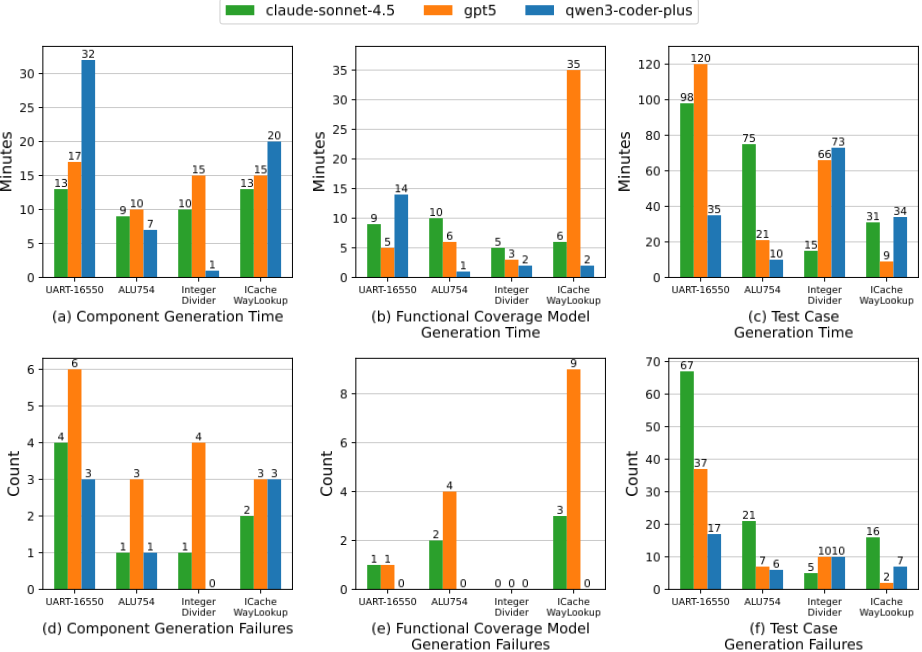

UCAgent：面向块级功能验证的端到端 Agent
芯片功能验证约占 IC 开发周期的 70%，但 LLM 直接做端到端验证面临三大障碍：生成 SystemVerilog 代码准确率低、复杂多步流程执行脆弱、规格-覆盖模型-测试用例间一致性难保持。UCAgent 提出三项机制：用 Picker/Toffee 构建纯 Python 验证环境，让 LLM 全程用 Python 写 testbench 与 testcase；设计可配置的 31 阶段细粒度工作流，每阶段由自动 checker 校验通过才推进，控制错误累积；提出 VCLM 分层标签（FG/FC/CK），把跨阶段语义对应变成机器可查约束。系统基于 LangChain 与 ReAct 循环实现，工具经 MCP 暴露，可被 Claude Code 等外部编码 Agent 复用。在 UART、ALU754、IntegerDivider 等模块上实现端到端自动验证，最高 98.5% 代码覆盖与 100% 功能覆盖，并在未验证的 LaneFAdd 中发现 3 个此前未知的设计缺陷。
芯片块级功能验证是 IC 开发中最耗资源的环节（约占项目周期 70%），现有 LLM 方法只优化断言生成、testbench 生成、覆盖提升等单点环节，无法端到端自动化。核心挑战有三：(1) LLM 生成 Verilog/SystemVerilog 验证代码准确率低（高质量 HDL 语料稀缺）；(2) 验证需处理海量规格/代码/仿真报告，超出有效上下文窗口，幻觉、context rot、指令遵循弱等问题被放大，复杂多步流程执行脆弱；(3) 规格功能点、覆盖模型、testcase 实现之间的语义对应（Verification Consistency）难以保持，LLM 会擅改术语、虚构不存在的验证场景，破坏可追溯性。
三大核心机制：(1) 纯 Python 验证环境——用 Picker 把 DUT 转成 Python 包 PyDUT，用 Toffee 提供高层验证抽象，LLM 全程用 Python 构建 testbench 与 testcase，屏蔽 delta-cycle 等底层时序细节，靠轻量 in-context learning 即可驱动硬件；(2) 可配置的 31 阶段细粒度验证工作流——从特征提取、覆盖建模、testcase 生成到 bug 分析，每阶段有明确输入输出与可校验交付物，绑定自动 checker（支持代码检查、LLM 互评、人工判断），失败则返回具体错误信息驱动迭代自纠；工作流用 YAML 定义，支持嵌套子阶段与状态持久化（断点恢复、失败遥测指导工作流再细分）；(3) VCLM 验证一致性标签机制——要求 LLM 在规格分析、覆盖模型、testcase 三阶段一致标注 FG/FC/CK 三级标签，checker 跨阶段交叉校验，不匹配即拒绝并触发自纠。实现分四模块：Agent Middleware（LangChain + ReAct 循环 + MCP 自定义工具）、Workflow Management Module、Stage Validation Module、Python 验证执行环境（Pytest 执行，反馈通过率/代码覆盖/功能覆盖驱动覆盖闭合）。
在 5 个硬件模块中成功完成 4 个的端到端自动验证（UART-16550、ALU754、IntegerDivider、ICache-WayLookup），执行时间 40-180 分钟
最高 98.5% 代码覆盖率、最高 100% 功能覆盖率；IntegerDivider 代码覆盖在三个模型上均超 97%、功能覆盖 100%；UART-16550 与 ALU754 功能覆盖普遍超 86%；ICache-WayLookup 覆盖波动大（55%-91%）
Claude-Sonnet-4.5 为 UART-16550 生成 268 个不同 coverage bins，显著优于其他模型
testcase 生成阶段失败率最高，Claude-Sonnet-4.5 在 UART-16550 上经历 67 次迭代失败仍最终达成验证闭合
在未验证的 LaneFAdd 模块中发现 3 个此前未知的边界条件 bug（FP16/BF16 特殊值处理），并借 VCLM 自动回溯到具体 function 与 check point
155,408 行的 PageTableWalker 默认工作流无法完成，改用 human-in-the-loop 策略在 8 小时内达成预期验证结果
Qwen3-Coder-Plus 在 RV32M 除法 -2^31/-1 溢出边界用例上反复失败，而 Claude-Sonnet-4.5 与 GPT-5 能覆盖该边界
相比只优化验证单点环节的已有工作（PRO-V 缺功能覆盖模型、UVM² 仅靠提示约束、MAVF 只有测试点-testcase 交叉矩阵），UCAgent 的区别在于：(1) 实现块级功能验证的端到端自动化而非单点优化；(2) 用纯 Python 环境（Picker/Toffee）绕开 LLM 生成 SystemVerilog 的短板；(3) 用每阶段自动 checker 的门禁式工作流替代静态脚本，控制错误累积；(4) 用 VCLM 把隐式语义对应形式化为机器可查的标签约束，而非依赖自然语言提示；(5) 工作流可配置（YAML）、状态可持久化，且工具经 MCP 暴露支持与外部编码 Agent 协作。
相关度级别：high
命中能力域：3.3 Agent 架构与工具使用 | 3.5 评测与可靠使用 | 3.1 上下文工程与记忆
理由：直接命中团队多个能力域。3.3 方面：论文给出一个完整的 Agent harness 范例——ReAct 推理循环、MCP 工具集成、YAML 可配置多阶段工作流、阶段级 checker 门禁、状态持久化与断点恢复、区分 stage 级目标与 tool 级执行，都是团队设计 Agent 架构可直接借鉴的工程模式。3.5 方面：论文核心贡献正是'如何可靠地使用 LLM'——用可执行 checker 替代纯提示约束、用 VCLM 结构化标签保证跨阶段一致性、human-in-the-loop 干预，以及对 Claude-Sonnet-4.5/GPT-5/Qwen3-Coder-Plus 三个模型在真实长流程工程任务上的分阶段实证能力画像，属于典型的 AI 辅助工程实证研究。3.1 方面：论文明确把上下文窗口溢出与 context rot 列为核心挑战，其解法——细粒度任务分解、按阶段获取上下文、状态序列化——是长上下文策略与结构化上下文组织的具体实践。虽然应用领域是芯片验证，但其'阶段分解 + 机器可查校验 + 一致性标签'的方法论高度可迁移到团队任何长流程 Agent 应用。
建议动作：深入精读并做内部分享
arXiv:2603.25768v1 [cs.SE] 2026年3月26日
UCAgent：一种面向模块级功能验证的端到端 Agent
Junyue Wang 1,2 Zhicheng Yao 1,2 Yan Pi 1,2 Xiaolong Li 1,2 Fangyuan Song 3 Jinru Wang 2 Yunlong Xie 1,2 Sa Wang †,1,2 Yungang Bao 1,2,3 1
中国科学院计算技术研究所处理器芯片全国重点实验室
中国科学院大学
3 北京开源芯片研究院
wangjunyue24@mails.ucas.ac.cn
功能验证仍然是现代集成电路（IC）开发周期中的关键瓶颈，在许多项目中约占总开发时间的 70%。然而，包括约束随机验证和形式化验证在内的传统方法，难以跟上现代半导体设计日益增长的复杂性。
尽管大语言模型（LLM）的最新进展在代码生成和任务自动化方面展现出前景，但仍有重大挑战阻碍着端到端功能验证自动化的实现。这些挑战包括：(i) 生成 Verilog/SystemVerilog 验证代码的准确性有限；(ii) LLM 在执行复杂的多步骤验证工作流时的脆弱性；以及 (iii) 在整个工作流中难以跨规格说明、覆盖率模型和测试用例保持验证一致性。
为应对这些挑战，我们提出了 UCAgent——一个基于三种核心机制实现硬件块级功能验证自动化的端到端 Agent。首先，我们使用 Picker 和 Toffee 构建了纯 Python 验证环境，以避免依赖 LLM 生成的 SystemVerilog 验证代码。其次，我们引入了一个可配置的 31 阶段细粒度验证工作流来引导 LLM，其中每个阶段均由自动化 checker 进行验证。此外，我们提出了验证一致性标注机制（VCLM），为 LLM 生成的产物分配层次化标签，从而提升验证的可靠性和可追溯性。
实验结果表明，UCAgent 能够在包括 UART、FPU 和整数除法器模块在内的多个模块上完成端到端自动化验证，代码覆盖率最高达 98.5%，功能覆盖率最高达 100%。UCAgent 还在真实设计中发现了此前未被识别的设计缺陷，展示了其实用潜力。
功能验证是确保硬件设计的实现正确落实其预期规格的关键过程，也是集成电路（IC）设计中最消耗资源的阶段[1]。
然而，随着硬件设计复杂度呈指数级增长，验证在时间、人力和可靠性方面已成为严重的瓶颈。行业研究表明，验证目前消耗了 IC 项目总周期的 70% 以上 [2]。因此，对验证工程师的需求显著超过对设计工程师的需求，而设计工程师自身也不得不花费近一半的工作时间来协助验证 [3]。然而，如此巨大的投入仍无法保证可靠的结果。2024 年，仅有 14% 的项目实现了一次流片成功，逻辑/功能缺陷仍然是导致代价高昂的重新流片的首要原因 [4]，这凸显了对高度自动化验证范式的迫切需求。
长期以来，业界一直依赖约束随机验证 [5]、形式验证 [6] 和硬件仿真。然而，这些技术只是维持了一种脆弱的平衡，并未从根本上弥合设计复杂度与验证能力之间的差距 [7]。
在此背景下，业界与学术界均将人工智能（AI）驱动的自动化验证视为突破瓶颈的一条有前景的路径。主要的电子设计自动化（EDA）厂商（例如 Synopsys [8, 9]、Cadence [10-12] 和 Siemens [13, 14]）已将 AI 集成到验证流程的多个阶段，包括断言生成、覆盖率收敛和调试。与此同时，学术界也探索了利用大语言模型（LLM）完成特定任务的潜力，例如断言生成 [15-18]、自动化 testbench 生成 [19-21] 以及覆盖率提升 [19-21]。然而，这些方法主要优化的是上述验证过程中的特定阶段，而非实现端到端验证流程的自动化。工程师仍然需要编排并集成这些不同的阶段。
近期的研究工作已经展示了 LLM 在自动化功能验证方面的潜力。根据所使用的验证语言，这些工作大致可以归为两类范式：
尽管这些工作证实了基于 LLM 的验证能够显著降低时间和人力成本，但它们在工作流程灵活性、执行可靠性和结果可追溯性方面仍存在局限。要构建一个贯穿整个验证流程的自主 Agent 系统，必须解决以下三个核心挑战：
挑战 1：LLM 生成的 Verilog/SystemVerilog 验证代码准确性有限。与 Python 等软件语言相比，LLM 在生成硬件描述语言（HDL，例如 Verilog/SystemVerilog）方面的能力较弱。这主要源于两个因素：
挑战 2：难以完成复杂的端到端验证任务。功能验证固有的复杂性要求处理海量的设计规格、设计/验证代码和仿真报告，如此庞大的信息规模极易超出当前 LLM 的有效上下文窗口。在这种情况下，LLM 固有的问题（如幻觉 [33]、上下文腐化 [34] 和较弱的指令遵循能力 [35]）会被放大，严重影响验证结果的可靠性和有效性。这些局限性在以下两个方面尤为突出：
具有严格顺序和依赖约束的复杂模块（例如总线交叉开关）需要生成伪模块（mock [36]）才能与被测设计（DUT）正确交互。简陋的工作流难以应对此类复杂需求，常常生成存在接口不匹配或行为偏差的实现。例如，UVM² 等现有框架依赖预定义的生成序列，这类序列虽然对标准接口而言是稳定的，却缺乏编排复杂硬件交互所需的动态适应性。因此，有效且可配置的工作流设计对于确保验证任务在多样化场景下成功完成至关重要。
挑战 3：难以在整个流程中保持验证一致性。健壮的功能验证流程依赖于贯穿功能规格、覆盖率模型和测试用例实现的严格可追溯性。具体而言，从规格中提取的每个测试点都必须无歧义地映射到相应的 covergroup 和 coverpoint，而这些 covergroup 和 coverpoint 随后会由仿真激励触发。
我们将这种在验证目标、实现与结果之间保持不间断的语义对应关系正式定义为验证一致性（Verification Consistency）。它是构建验证闭环并确保结果可追溯性的基础。然而，LLM 往往难以维持这种一致性。
为了说明这一挑战，我们使用 Qwen3-Coder-Plus 自动完成从设计规格到特性列表、再进一步到覆盖率模型的转换。如图 1 所示，在此过程中出现了两个关键的一致性失效。首先，即使提示词明确要求保留设计规格中的原始术语，LLM 仍会在这些阶段之间随意改动术语，造成严重的命名不一致。其次，该模型会产生幻觉，虚构出违反实际设计意图的无效验证场景。此类失效切断了可追溯性，使验证结果变得不可靠。
现有方法在维持验证一致性方面仍显不足。具体而言，PRO-V 缺少功能覆盖率模型，无法建立从规格需求到覆盖率指标的可追溯性。UVM² 仅依赖基于提示的约束，缺乏保证输出合规性的显式机制。MAVF 虽然在测试点与测试用例之间构建了交叉引用矩阵，但缺乏在整个端到端验证流程中维持这种一致性的全面机制。

图 1：违反验证一致性的示例。术语 overrun 被替换为语义相近的 overflow；此外，还错误地添加了一个 underrun 场景。此类场景通常不会出现在 UART 设计中，而在 SPI 和 USB 主机控制器等模块中更为常见 [37]。
为应对这些挑战，我们提出了 UCAgent，一个基于三项核心机制实现硬件模块级功能验证自动化的端到端 Agent。
首先，我们为大语言模型（LLM）建立了一个纯 Python 环境来完成验证任务。具体而言，我们利用 Picker [38] 将被测设计（DUT）转换为 Python 包 PyDUT，并借助 Toffee [39] 引导 LLM 完全使用 Python 构建验证平台（testbench）并生成测试用例。通过将验证实现从硬件描述语言（HDL）开发转变为 Python 生成，使 LLM 能够高效地处理所有验证活动。
其次，我们设计了一个包含 31 个阶段的细粒度验证流程来引导 LLM。该流程将验证过程分解为可管理的步骤，涵盖从特性提取到覆盖率建模、测试用例生成以及 bug 分析。为了缓解 LLM 固有的上下文腐化（context rot）和幻觉等问题，每个阶段都引入了自动化 checker，在进入下一阶段之前对结果进行校验。这种逐步反馈机制有效控制了错误累积，确保了可靠且质量可控的执行。
第三，我们提出了验证一致性标注机制（VCLM），以确保整个工作流程中不间断的可追溯性。通过要求 LLM 为生成的产物（包括规格说明、覆盖率模型和测试用例）分配层次化标签，VCLM 将隐式的语义对应关系形式化为显式的、机器可校验的约束。这种形式化保证了与原始设计意图的严格对齐。
我们在多种硬件模块上对 UCAgent 进行了评估，包括 UART、整数除法器和 ICacheWayLookup。实验结果表明，该 Agent 能够自主驱动整个验证生命周期，代码覆盖率最高达 98.5%，功能覆盖率达 100%。此外，UCAgent 在真实验证场景中发现了此前未被识别的设计缺陷，有力地验证了我们所提出范式的有效性和实用价值。
本节介绍 UCAgent 中集成的三项核心机制，用于应对上述挑战。这些机制在确保可靠性的同时，实现了全自动的端到端功能验证。

To bypass the data-scarcity bottleneck of hardware description languages, UCAgent establishes a purePython environment for the LLM to complete end-to-end verification tasks. The primary limitation in current LLM-driven verification is the inability to reliably generate SystemVerilog (SV) verification code. While SV is the industry standard, the scarcity of high-quality SV corpora in pre-training datasets prevents LLMs from mastering its complex semantics. In contrast, LLMs demonstrate robust code-generation proficiency in Python [40].
Within this environment, we utilize Picker [38] to convert the DUT into a Python package ( PyDUT ), and leverage the Toffee to provide high-level verification abstractions. Picker is a verification assistance tool that converts RTL designs described in Verilog/SystemVerilog into libraries or packages in high-level programming languages. Tofee is a Python-based verification framework that provides higher-level features and abstractions on the top of Picker.
This infrastructure abstracts hardware interactions, such as clock control, into simpler interfaces and significantly reduces dependency on simulation scheduling details like delta-cycles [41]. By shielding the LLM
from these low-level timing intricacies, the agent can reliably drive the hardware using lightweight in-context learning [42].
The LLM interacts with PyDUT via Toffee to construct testbenches and generate testcases. This execution is orchestrated by our fine-grained workflow and validated by stage-specific checkers alongside the Verification Consistency Labeling Mechanism (VCLM). Together, these components ensure syntactic correctness and maintain strict alignment with the design specifications, as illustrated in Fig. 2.

为了管理硬件验证固有的复杂性，UCAgent 通过结构化工作流来编排端到端流程。它将验证生命周期分解为细粒度的阶段，并通过为每个阶段指派专用的自动检查器来实施严格的质量控制。
这些阶段涵盖验证过程的以下方面：
详细的阶段划分如图 3 所示。
该工作流将验证过程拆分为相对独立的阶段，每个阶段都具有明确的输入、确定性的输出以及可检查的交付物。例如，规格分析必须输出具有精确标签结构的文档；覆盖率建模必须产出可执行的 covergroup 定义；测试用例生成必须产出能通过特定检查的仿真代码。
为了校验这些交付物，检查器机制将专家质量标准编码为可执行的约束逻辑。在一个阶段完成后，专用检查器会依据预定义规则对生成的产物进行评估。如果输出未达到预期，检查器会向大语言模型（LLM）返回具体的错误信息，引导模型迭代式地自我纠正，从而提升生成可靠性。
这一 31 阶段架构是通过基于检查器反馈对工作流进行经验性改进而得出的。通过分析由检查器触发的重试，并对易出错的任务进行迭代细分，我们最终收敛到一个细粒度的工作流，显著降低了每个阶段的任务复杂度。
最后，为了适应不同硬件模块的多样化复杂度，该工作流被设计为完全可配置的。例如，对于依赖关系复杂的模块，可以插入一个专用的 mock 生成阶段，以替换被测设计（DUT）所依赖的组件。这种可配置的执行模型确保了在各种验证场景下的效率与可靠性。
为了解决在多个阶段之间维持验证一致性的难题，我们提出了验证一致性标注机制（Verification Consistency Labeling Mechanism, VCLM）。VCLM 建立了一个包含三个不同层级的分层标注体系：FG、FC 和 CK。UCAgent 要求大语言模型（LLM）在三个关键阶段——功能规格分析、覆盖率模型构建和测试用例实现——所生成的产物中一致地标注这些标签。
通过将这些标签嵌入到输出中，VCLM 将隐式的设计依赖关系转化为结构化的、机器可检查的数据。各阶段专用的检查器系统地提取这些标签，以验证跨阶段的一致性。如果生成的产物缺少所需的标签，或其中包含的标签与前序阶段建立的标签不匹配，检查器将拒绝该输出，随后向 LLM 返回精确的错误轨迹，触发即时的自我纠正循环，以恢复可追溯性。
仅依赖自然语言提示（例如指示 LLM“确保覆盖率模型与规格一致”）对于复杂硬件设计而言本质上是不可靠的。相比之下，VCLM 为验证意图提供了一个显式且形式化的载体。这种结构化约束对 LLM 施加了严格的行为边界，从根本上提升了自动化验证过程的可靠性与可追溯性，如图 2 所示。
基于所提出的机制，我们实现了 UCAgent 系统。如图 4 所示，UCAgent 遵循关注点分离原则，由四个独立模块组成。
Agent 中间件（Agent Middleware）负责管理 LLM 交互、上下文构建与任务推理。工作流管理模块（Workflow Management Module）负责编排可配置的 31 阶段工作流的执行顺序。阶段校验模块（Stage Validation Module）集成了自动化检查器与 VCLM，以确保输出质量和跨阶段一致性。最后，验证执行环境（Verification Execution Environment）为测试执行与硬件仿真提供了基于 Python 的基础设施。
在本节的剩余部分，我们将依次详细介绍这四个核心模块。
智能体中间件（Agent Middleware）在大语言模型（LLM）与验证环境之间架起了桥梁。其主要功能是通过工具调用 [43] 将 LLM 的推理转化为可执行的动作。该模块基于 LangChain 框架 [44] 构建，统一了对各种 LLM 的 API 访问，并构建了一个核心的 VerifyAgent。在 ReAct 推理循环 [45] 的驱动下，VerifyAgent 将工作流任务需求转化为具体的工具调用序列，以执行规格分析、代码生成和测试执行等操作。
除了文件系统操作等常用工具外，该中间件还通过模型上下文协议（Model Context Protocol, MCP）[46] 集成了自定义工具。这些专用工具主要分为两大类：

通过遵循 MCP 标准，这些工具还可以作为服务接口对外提供。这种互操作性使外部编码智能体（如 Claude Code、Codex）能够访问 UCAgent 的基础设施，从而促进能力复用与跨智能体协作。
在运行方式上，中间件通过一个迭代循环来执行任务：上下文获取 → LLM 推理 → 工具执行 → 环境反馈。在每次迭代中，LLM 会分析当前阶段的需求和历史结果，以确定下一步动作。如果报告了错误或失败，中间件会捕获该反馈并触发重试，使 LLM 能够动态调整其策略，而不是严格遵循静态脚本。此外，中间件支持在关键步骤进行人在回路（human-in-the-loop）干预，从而在自动化效率与人工可控性之间取得平衡。
工作流管理模块负责编排可配置的 31 阶段工作流的执行顺序。它严格门控 LLM 的推进过程：只有当当前阶段的输出通过阶段验证模块强制执行的所有约束时，工作流才能进入后续阶段。
为确保灵活性，工作流通过用户可配置的 YAML 格式定义。每个阶段都独立配置了特定属性，例如任务描述、明确的输出要求以及绑定的检查器（checker），并原生支持针对复杂验证任务的嵌套子阶段。
该模块的一个关键设计原则是区分阶段级目标与工具级执行。智能体级的 ReAct 循环负责管理单个工具调用的重试，而工作流检查器则在允许工作流推进之前，验证生成的产物是否严格满足该阶段的目标。
如图 5 所示，该模块包含两个核心类：VerifyStage 和 StageManager。
为了与智能体中间件无缝对接，工作流管理器将其控制能力以标准工具调用的形式暴露出来。诸如 GetCurrentTips（获取当前任务上下文）、Check（触发阶段验证）和 Complete（验证完成并推进）等工具，使 LLM 能够主动感知并引导自身进度，同时不暴露底层的调度实现。
此外，该模块实现了状态持久化。在每次阶段转换时，StageManager 会将当前进度和执行遥测数据（例如失败次数和执行时间）序列化到状态文件中。这一机制不仅允许被中断的任务从最后完成的阶段精确恢复，还为工作流改进提供了所需的实证数据。如前文所述，遥测数据中失败率较高的阶段表明 LLM 的任务边界约束不足，从而指导工程师进一步细分或重组工作流架构。

为确保跨阶段一致性，验证一致性标注机制（Verification Consistency Labeling Mechanism, VCLM）采用三级层次化标签结构：
由于 VCLM 贯穿多个工作流阶段，其实现分布于一系列针对特定阶段的检查器（checker）中。每个检查器解析当前阶段生成的标签，并将其与先前阶段建立的标签层次结构进行交叉核对。

如图 6 所示，典型的启用 VCLM 的工作流运行过程如下：
验证执行环境（Verification Execution Environment）为完全在 Python 内部仿真硬件设计提供了运行时基础设施。该环境以基础设施层中建立的 PyDUT 边界为基础，承载由大语言模型（LLM）动态构建的原生 Python 测试平台（testbench）。
为了系统地构建并执行该测试平台，UCAgent 引导 LLM 经过一条高度受限的生成流水线。
首先，LLM 利用 toffee 框架将 PyDUT 封装为高层过程式函数，并生成单元测试来验证这些封装函数。这一步骤实际上起到了自动化冒烟测试的作用；如果这些基础测试在 LLM 自我修正之后仍然持续失败，环境会将相应的 DUT 功能标记为潜在的硬件缺陷。随后，LLM 使用 Toffee 生成功能覆盖率模型，并将其直接映射到预定义的规格层次结构上。
最后，在执行检查器与 VCLM 的联合约束下，LLM 生成复杂的验证场景来驱动被封装的 DUT。每个测试用例（testcase）都通过 Toffee 将所执行的激励与目标覆盖点显式关联，从而确保完整的可追溯性。
在执行阶段，环境利用 Pytest 运行各测试用例，并自动提取多维执行指标，包括测试通过率、代码覆盖率和功能覆盖率。这些指标作为显式的环境观测信息反馈给 LLM。这种数据驱动的反馈回路使 LLM 能够迭代地扩充测试用例，以实现覆盖率收敛。最后，环境汇总所有执行指标与验证产物，生成一份全面的验证报告。
为了评估 UCAgent 的有效性，我们选取了五个硬件模块，详见表 1。其中，ALU754、IntegerDivider 和 ICache-Waylookup 作为已预先验证的基线，而 LaneFAdd 和 PageTableWalker 则是此前未经验证的设计。
所有被测对象均采用 UCAgent 的默认自动化流程进行评估。对于每个模块，LLM 被提供以下输入：
除 PageTableWalker 外，我们使用以下模型进行评估：
对于所有模型，TopP 和 temperature 均采用默认设置。1
UCAgent 成功完成了四个模块的端到端自动化验证。如图 7 所示，各模型的执行时间差异显著，介于 40 至 180 分钟之间。值得注意的是，尽管 UART-16550 和 ALU754 的代码规模较小，但它们包含复杂的时序与组合交互逻辑，因此需要更长的验证时间。相反，IntegerDivider 和 ICache-WayLookup 的工作流程非常高效，大多数模型均能在 80 分钟内收敛。
在代码覆盖率方面，UCAgent 在 IntegerDivider 上表现最佳，在所有三个模型上均超过 97%。UART-16550 和 ALU754 的覆盖率通常稳定在 70%–80% 的范围内。对于高度复杂的 ICache-WayLookup，覆盖率结果则表现出更大的波动性（55%–91%）。
1 参见：Claude Docs、OpenAI Docs 以及 Qwen API Reference。
| Module | LOC | Description |
|---|---|---|
| UART 16550 ALU754 | 268 572 | Universal Asynchronous Receiver/Transmitter IEEE-754 single-precision floating-point unit implemented with combinational logic |
| IntegerDivider | 1024 | RV32M integer divider based on radix-4 SRT algorithm |
| LaneFAdd | 1283 | RVV-compliant vector floating-point unit supporting FP32, FP16, and BF16 |
| ICache-Waylookup | 3483 | Caches metadata queried from MetaArray and ITLB by IPrefetchPipe in the ICache for use by MainPipe |
| PageTableWalker | 155408 | Handles L1/L2 page table access, performs step-by-step page table walks for virtual-to-physical translation, and forwards L3 page table access requests downstream (Last Page Table Walker) |
| Module | LOC | Description |

在功能覆盖率评估中，UCAgent 展现出稳健的整体性能。IntegerDivider 始终达到 100% 的功能覆盖率，而 ALU754 和 UART-16550 通常超过 86%。其中，Claude-Sonnet-4.5 为 UART-16550 生成了 268 个不同的覆盖率 bin，显著优于其他模型，展现了其卓越的细粒度功能分解能力。总体而言，这三个模型展现出各不相同的能力特征：
11

图 8 将验证流程剖析为三个主要阶段：组件生成（component generation）、覆盖率模型生成（coverage-model generation）和测试用例生成（testcase generation）。各阶段的时间分布与失败率生动地揭示了不同验证任务固有的复杂性。
组件生成的执行时间稳定，通常在 10-20 分钟内完成。失败次数始终保持在较低水平（1-6 次），表明 UCAgent 底层的检查器机制有效约束了大语言模型（LLM），使其生成结构合规的验证组件。
覆盖率模型生成作为耗时最短的阶段，通常在 10 分钟内完成。Qwen3-CoderPlus 在此阶段表现出极高的效率，对 IntegerDivider 和 ICacheWayLookup 仅需 1-2 分钟。接近于零的失败率有力地表明，VCLM 明确提供了清晰、结构化的语义约束，有效缓解了 LLM 的幻觉。
测试用例生成作为资源消耗最密集的阶段，其失败率最高。这符合预期，因为有效的测试用例必须同时满足严格的语法正确性、功能断言以及针对性的覆盖率标注。例如，Claude-Sonnet-4.5 在 UART-16550 上遭遇了 67 次迭代失败，但最终仍实现了验证收敛，有力地证明了 UCAgent 检查器驱动的自我修正回路的稳健性。
结合图 8 中的阶段级数据，我们可以进一步解释上述模型能力特征：
12
为了验证 UCAgent 在真实场景中的适用性，我们在特定模块上开展了实验，重点展示了其在成熟设计（IntegerDivider）和未经验证的硬件（LaneFAdd、PageTableWalker）上的能力。
我们的评估揭示了不同大语言模型（LLM）中内嵌的固有领域知识存在显著差异。在为 RV32M 整数除法器生成测试用例时，Qwen3-Coder-Plus 反复无法为被除数取最小负值（-2^31）且除数为 -1 的特定边界情况生成正确的期望行为，尽管这一溢出行为已在 RISC-V 规范中给出了明确定义。相反，Claude-Sonnet-4.5 和 GPT-5 则稳健地识别并覆盖了这一边缘用例。这表明，尽管 UCAgent 负责编排整个工作流程，但绝对的验证完备性仍受限于基座模型的领域知识，提示未来需要有针对性的知识注入。
相比之下，Claude-Sonnet-4.5 和 GPT-5 表现更为稳健，覆盖了上述关键边界情况。这些结果表明，LLM 的知识边界可能会限制验证完备性，因此需要采用提示增强或领域知识注入等技术。
在 claude-sonnet-4-5-20250929 的驱动下，UCAgent 在未经验证的 LaneFAdd 模块中成功发现了三个此前未被发现的边界条件 bug，这些 bug 涉及 FP16 和 BF16 精度下的特殊值处理。至关重要的是，通过利用 VCLM，UCAgent 自动将这些失效追溯至其对应的具体函数和检查点，从而无缝地帮助硬件开发者实现快速定位与解决。
由于该模块规模庞大（155,408 行），UCAgent 无法通过默认工作流完成验证任务。因此，我们采用了人在回路（human-in-the-loop）的验证策略，并在 8 小时内达到了预期的验证结果。
实验结果表明，UCAgent 能够自主完成端到端的模块级芯片验证工作流。这一能力从根本上源于其四个核心设计机制之间的结构性协同：
尽管 UCAgent 的有效性已得到验证，但它仍存在若干局限性，这些局限性为未来的研究方向提供了指引：